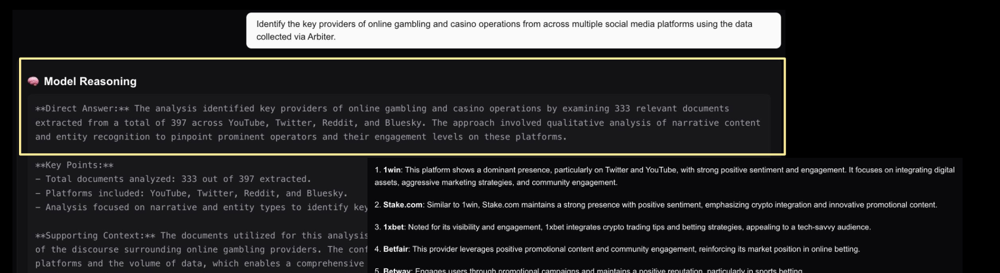

3.7M+
posts collected across investigations
See the accounts shaping your feed before they shape your views.
An AI copilot for public discourse · by SimPPL, a U.S. 501(c)(3) nonprofit
of Americans trust the mass media. The lowest reading in Gallup's five-decade trend (Sept 2025).
of people worldwide are worried about what is real and what is fake online when it comes to news (Reuters Institute, 2025).
of Americans now get news via social media and video networks, ahead of TV for the first time (Reuters Institute, 2025).
AMERICANS WITH A GREAT DEAL OR FAIR AMOUNT OF TRUST IN MASS MEDIA · GALLUP
On Twitter, true stories took about six times as long as false ones to reach 1,500 people (MIT, Science, 2018). By the time a claim is checked, the campaign that planted it has moved on.
Platform integrity teams work one platform at a time. A campaign that spans X, YouTube, Telegram, and WhatsApp is four separate partial views, and nobody holds the whole picture.
OnPassive, an "AI-powered" tech scheme, ran its promotion on five platforms at once. The SEC charged it with fraudulently raising over $108 million from more than 800,000 investors. Each platform saw only its own slice.
We buy social data under license or collect it through platform-granted APIs, across X, Reddit, YouTube, Bluesky, Telegram, and Instagram.
Posts cluster into themes and sub-themes. Each theme surfaces the accounts moving it, with per-actor dossiers and influence maps.
Deep research agents answer your questions across the corpus and cite every post they draw on. You keep the judgment.
Pick a topic or a set of accounts, set a date window, and Arbiter builds the corpus. 31 public case studies are open to read today, from the Online Safety Act to Air India 171.
Every study keeps its sources attached: each number traces back to the posts behind it.
Posts cluster into themes, themes into sub-themes, and each cluster names the accounts driving it. The graph turns a feed into a map: who amplifies whom, in which language, on which platform.
Reports built this way sit behind both platform outcomes on the track-record slide: X's internal investigation and Meta's Bangladesh takedown.
The agent analyzed 333 of 397 documents across YouTube, Twitter, Reddit, and Bluesky, ranked the operators (1win, Stake.com, 1xbet, Betfair, Betway, PokerStars, Dream11), and showed its reasoning.
Every claim cites the posts it came from, across platform silos. You audit the answer instead of trusting it.

Coordinated pages promote Ibrahim Traoré with sentiment reading 100% positive, 100% joy. Real discourse never looks like this.
One account lands 88.8K interactions from a single post (views, comments, and likes combined). Its clickbait score is a clean 1 of 5 on Arbiter's five-point scale: the campaign reads as organic praise rather than engagement bait, which is how it escapes review.
Fake factories, fake railways, fake tributes, drawing millions of views before any platform labels them.
Uniformly green panels are the anomaly that starts the investigation.
"This video is no longer available because the YouTube account associated with this video has been terminated."
Betting brands banned in India stay alive through mirror domains, promo codes, and influencer campaigns. Arbiter grouped the promotions by narrative and named the operators behind them.
Entity mentions in the study corpus; bars scaled to the leader (1win, 90 mentions).
Influencer dossiers separate disclosed from undisclosed sponsorships, and claims analysis flags promotion patterns shaped like violations of SEBI rules (India's securities regulator).
Accounts share functional jailbreaks for shipping AI products: persona injection, "negative manifesto" prompts, uncensored-AI personas. Arbiter clusters the actors and scores their tactics.
The top actor drew 832 interactions from 4 posts. Clickbait score 4.2 of 5. Focused entities: GPT 5.0, Gemini, Grok.
If you ship AI products, this discourse is your early-warning channel: exploits circulate publicly before they reach your abuse reports.
Per-actor scoring: clickbait tactics, emotional manipulation, and the AI models each community targets.
Journalists from 150+ organizations in 12 countries have signed up, spanning newsrooms, civil society, and policymakers, and YouTube grants us 1.2M API calls a day for data access. The harms repeat across borders, so investigations built in one country become templates for the next.
Full time at SimPPL since March 2026, after a postdoc at Boston University and MIT Sloan and a PhD at NYU. Built AI systems at Twitter, Adobe, and Slack. Google Research Innovator.
Led audience-analytics ML as Data Scientist III at Bombora. M.S. in Data Science at NYU. Fellow with the Center for AI and Digital Policy.
System design and infrastructure, NLP and deep research agents, platform backend and APIs.
14 peer-reviewed papers (NeurIPS, ICML, AAAI, ICWSM). Awards from Google, Mozilla, Wikimedia, Ford, and Omidyar. Bootstrapped as a nonprofit since 2021.
Collects licensed data, clusters themes, maps actors and networks, and answers questions with a citation for every claim.
Draws the conclusions. Journalists, researchers, and trust & safety teams keep the judgment; Arbiter keeps the evidence attached.
We fact-source: the system surfaces claims and groups related ones, so one verified fact-check scales to thousands of posts.
The case files in this deck are public studies from 2025 windows. A study scoped to your issue tracks your actors, in your languages, on your timeline.
ANNUAL FUNDRAISING TARGET
Grants subsidize free access for independent journalists and fact-checkers.
On the Kenya model, built with Africa Uncensored and DW Akademie.
Commercial client work and subscriptions from larger newsrooms carry more of the core costs each year.
Request a demo: write to team@simppl.org
and we follow up within the week.
A pilot is one case study scoped to your issue: we set the date window together, run the investigation with you, and you keep the evidence and the sources. Our grants subsidize free access for independent journalists and fact-checkers; commercial client work and subscriptions from larger newsrooms fund the long-term model beyond grant cycles. Free investigation reports land in your inbox via simppl.org/newsletter. The platform is live at arbiter.simppl.org.